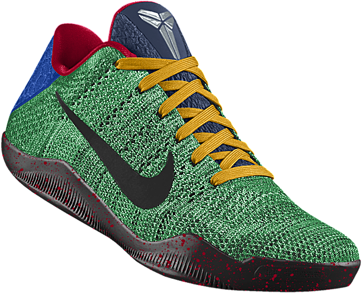
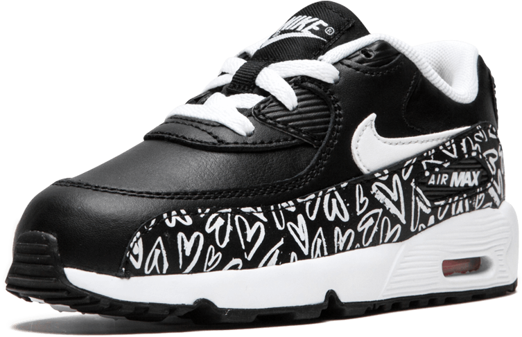
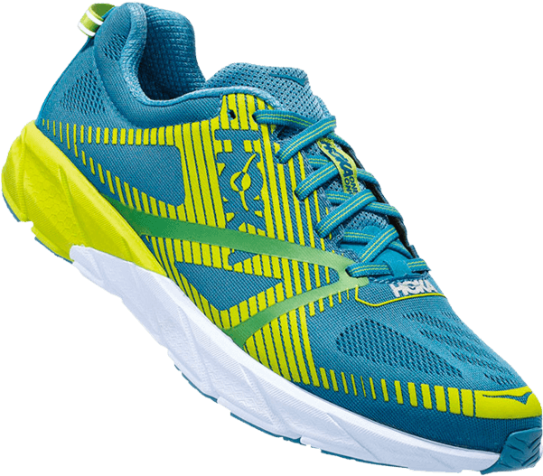
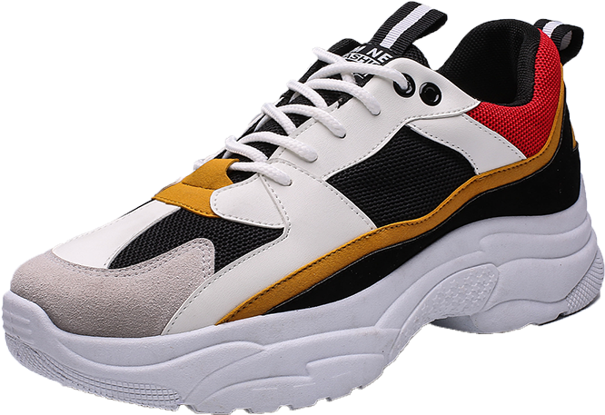
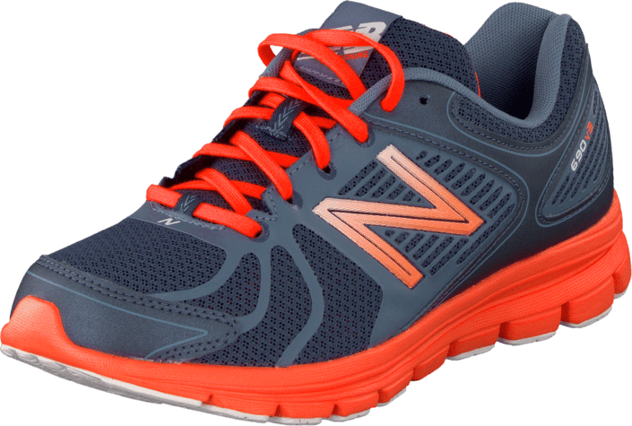

Our Products

Nike Flywire
Flywire was created by Jay Meschter, Director of Innovation at
Nike. He began by taking a "last" (an object shaped like a foot
used to design shoes) and marking the key points of where a shoe
needs to support the foot.The goal of the design is to help and
support the foot using the lightest and strongest material
possible, Vectran. The Flywire design prevents the foot from
slipping when running. Flywire is also a minimalist idea (the idea
that items should only contain necessities), since the upper only
contains the fundamental features. This allows the maximum amount
of energy to be moved forward each stride
Buy Now

Nike Air Max
As the name indicates, all Air Max shoes feature one or more
translucent pouches of pressurized gas embedded in the midsole and
visible from the outside of the shoe. Referred to as "Air units"
or "airbags," their stated purpose is to provide superior
cushioning to traditional foam while also reducing weight. The
effectiveness of the technology for this purpose is disputed;
nevertheless, the shoes enjoy consistent popularity, especially
among sneaker enthusiasts and collectors.
Buy Now

Hoka
Hoka shoes have a cushioned midsole that offers shock absorbency
and added comfort to help protect your joints, "Meta-Rocker". The
Meta-Rocker technology uses a low heel-to-toe drop — meaning the
height difference between the heel and the ball of the feet is
minimal — plus a rounded sole to help propel you forward. Hoka
shoes retain features like a low weight-to-cushion ratio and
midsole and outsole geometry designed to promote inherent
stability and an efficient stride.
Buy Now

Nike Zoom Air
Zoom Air made its original performance debut in three styles: the
Nike Air Marauder football cleat, the Nike Air Go LWP basketball
shoe, and soon after, the Nike Air Zoom LWP running shoe. Ever
since, athletes have trained, competed and won in shoes featuring
its responsive cushioning. Zoom Air technology is designed for
athletes across multiple sports whose performance is based on
speed. Whether that means an explosive drive, a powerful cut, or a
lightning-quick change of direction. Zoom Air absorbs the forces
applied to it by the fastest athletes in the world—and gives a
little of it right back.
Buy Now

Nike Dunk Low Retro
The Nike Dunk is one of the most collectible silhouettes on the
market today. Basketball shoe turned skateboarding staple, the
Dunk has enjoyed a full-force revival in the year 2020 and 2021,
surpassing its original purpose as a college hoop sneaker by a
long shot. The Dunk is renowned for its incredible ability to
unify art, fashion, music and popular culture into one seamless
whole, consistently acting as a shoe for several subcultures
worldwide.
Buy Now

New Balance 690 v3
Created with simplicity in mind for runners who are looking for
the latest technology elements in design and construction.
Seamless upper delivers excellent comfort, outsole IMEVA comfort
and lightness run. Lightweight making these ideal for running or
training. Durable long lasting sole, with EVA lining for added
comfort. They're well-cushioned and, unlike cheaper running shoes,
New Balance uses a leather and fabric combination to create a
sturdier, more durable shoe so you get the support you need.
Buy Now

Nike Air Force 1
The Air Force 1 was produced in 1982 and discontinued in 1984. It
was re-released in 1986 with the modern italic Nike logo with a
Swoosh on the bottom on the back of the shoe. Little has changed
to the Air Force One since its creation in 1982, although the
original stitching on the side panels is no longer present in
modern versions of the shoe. Since then, over 1,700 color
variations have been produced, bringing in an estimated 800
million USD/year in revenue. The selling of the Air Force Ones
online by certain retailers used to be prohibited by Nike who had
restricted supply of the sneaker. Nike now allows retailers to
offer the shoe for sale online.
Buy Now

Adidas Dragon
It wasn't until the 70's, shortly before Adi's death, that the
classic Adidas Dragon shoe was invented and released to the
public. Perhaps one of the more overlooked classics in the Adidas
repertoire, the retro Dragon is a little flatter and lighter than
the other classics Adidas are known for shoes which often have a
thicker, more cushioned sole and heavier upper lining. The Dragon
stays true to form with the classic three stripe pattern; the
vintage mark of Adidas quality which has been part and parcel of
the company since its founding in 1949. However, it wasn't until
the new millennium that the Dragons really spread their wings and
soared to popularity eventually becoming a mainstay in popular
culture.
Buy Now